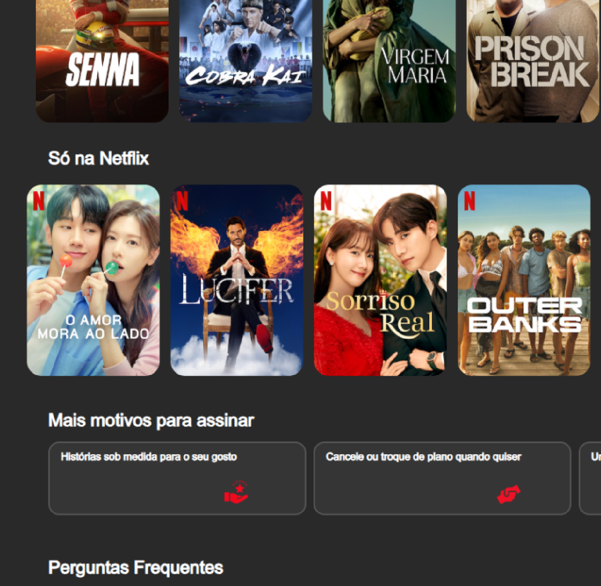
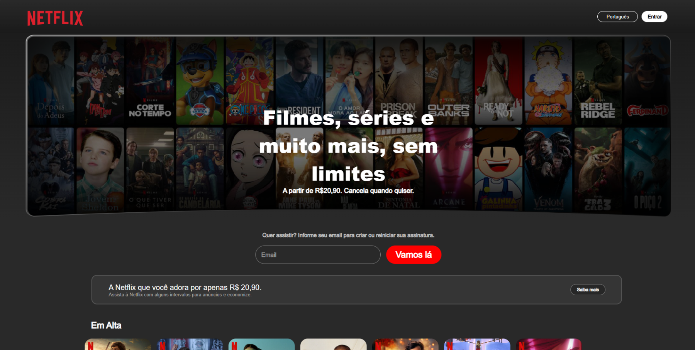
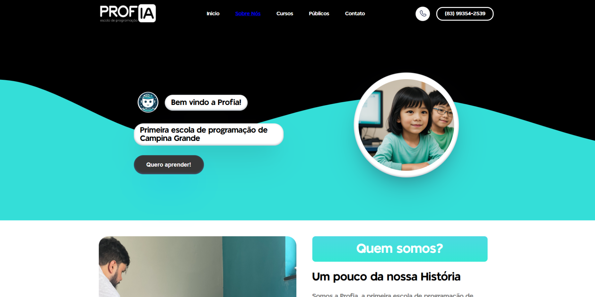

Andrew Targino
Trabalhos
Formação
Contato
Projetos realizados
Netflix
A criação de uma interface front-end envolve desenvolver uma experiência visual e interativa para o usuário. O processo começa com o planejamento do layout e da estrutura do site ou aplicativo, considerando o público-alvo e os objetivos do projeto.


Profia
Um bom design front-end não apenas melhora a estética do site, mas também influencia a usabilidade, acessibilidade e desempenho. Além disso, com a crescente diversidade de dispositivos, o front-end assegura que as plataformas sejam responsivas, ou seja, adaptáveis a diferentes tamanhos de tela. Em resumo, o front-end é essencial para transformar a experiência do usuário em algo eficiente, atrativo e funcional.
